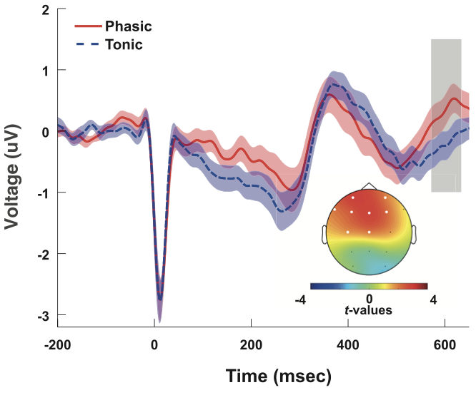

Heartbeat-Evoked Potential

The heartbeat-evoked potential (HEP) is an EEG response time-locked to the R-peak of the cardiac cycle. It reflects the cortical processing of afferent signals originating in the heart and is considered one of the most direct neural markers of cardiac interoception — the brain’s monitoring of its own body.
This research line investigates how the HEP is modulated by internal states such as physical fitness, sleep stage, emotion, and psychopathology, and what role cardiac-brain coupling plays in sustained attention and self-perception. A central methodological contribution is HEPLAB, an open-source EEGLAB plugin for automated detection of cardiac events in raw ECG signals, developed in this lab and used by research groups worldwide.
Journal Articles
-
Yoris, A. E., Ciria, L. F., Luque-Casado, A., Salvotti, C., Tajadura-Jiménez, A., Avancini, C., Zarza-Rebollo, J. A., Sanabria, D., & Perakakis, P. (2024). Delving into the relationship between regular physical exercise and cardiac interoception in two cross-sectional studies. Neuropsychologia, 198, 108867. doi: 10.1016/j.neuropsychologia.2024.108867
Two cross-sectional studies examining the relationship between regular physical exercise and cardiac interoception, combining behavioral and neural (HEP) indices of heartbeat perception.
-
Bogdány, T., Perakakis, P., Bódizs, R., & Simor, P. (2022). The heartbeat evoked potential is a questionable biomarker in nightmare disorder: A replication study. NeuroImage: Clinical, 33, 102933. doi: 10.1016/j.nicl.2021.102933
A replication study evaluating whether the heartbeat evoked potential serves as a reliable biomarker in nightmare disorder, using an independent sample and pre-registered analysis pipeline.
-
Simor, P., Bogdány, T., Bódizs, R., & Perakakis, P. (2021). Cortical monitoring of cardiac activity during rapid eye movement sleep: the heartbeat evoked potential in phasic and tonic rapid-eye-movement microstates. Sleep, 44(9). doi: 10.1093/sleep/zsab100
EEG study of cortical cardiac responses across different microstates of REM sleep. HEP amplitude was modulated by phasic versus tonic REM, revealing state-dependent cardiac interoception during sleep.
-
Wallman-Jones, A., Perakakis, P., Tsakiris, M., & Schmidt, M. (2021). Physical activity and interoceptive processing: Theoretical considerations for future research. International Journal of Psychophysiology, 166, 38–49. doi: 10.1016/j.ijpsycho.2021.05.002
A theoretical framework linking physical activity and interoceptive processing, reviewing evidence relating exercise habits to heartbeat perception, autonomic function, and body awareness, and proposing directions for future empirical work.
Preprints
-
Perakakis, P., Luque-Casado, A., Ciria, L. F., Ivanov, P. Ch., & Sanabria, D. (2017). Neural Responses to Heartbeats of Physically Trained and Sedentary Young Adults. bioRxiv. doi: 10.1101/156802
First study to examine whether regular physical exercise modulates the cortical processing of afferent cardiac signals. Physically trained individuals showed distinct HEP patterns at two spatio-temporal clusters, correlating with sustained attention performance.
Software
-
Perakakis, P. (2019). HEPLAB. EEGLAB plugin / MATLAB toolbox.
Open-source EEGLAB plugin and standalone MATLAB toolbox for the automated detection of cardiac events (R-wave, T-wave) from raw ECG signals. Features an interactive GUI for artifact inspection and correction. Exports events to EEGLAB's EEG structure to facilitate heartbeat-evoked potential (HEP) analysis. Widely adopted by psychophysiology and cognitive neuroscience research groups.
Funded Projects
-
The psychophysiological origins of the heartbeat-evoked potential
This project investigated the neural and physiological mechanisms underlying the heartbeat-evoked potential (HEP), examining how afferent cardiac signals are processed by the brain and how this processing relates to interoceptive awareness, physical fitness, and cognitive performance.